✏️ Edit Mode Essentials
You've learned about mesh structure—now it's time to shape it! Edit Mode is where the real magic happens, where you transform simple primitives into complex custom models. This is your gateway to true 3D modeling, where you'll work directly with vertices, edges, and faces to create anything you can imagine. Welcome to the heart of 3D creation!
📚 What You'll Learn
- Entering and exiting Edit Mode confidently
- The three selection modes and when to use each
- Advanced selection techniques for efficient workflow
- Essential mesh editing operations: Extrude, Inset, Bevel, Loop Cut
- Working with individual components vs. whole objects
- Keyboard shortcuts that accelerate modeling
- Building your first custom model from a primitive
- Best practices for clean modeling workflow
⏱️ Estimated Time: 75-90 minutes
🎯 Project: Model a simple house from a cube
In This Lesson
🚪 Entering Edit Mode
Edit Mode is fundamentally different from Object Mode. In Object Mode, you manipulate entire objects as units. In Edit Mode, you dive inside objects to modify their individual components—vertices, edges, and faces.
Object Mode vs Edit Mode
Think of it this way: Object Mode is like moving furniture around a room—you move whole pieces. Edit Mode is like being a carpenter—you're shaping the wood, adding details, changing the structure itself.
🔄 The Two Modes Compared
| Object Mode | Edit Mode |
| Move/rotate/scale entire objects | Move/rotate/scale individual components |
| Select different objects | Select vertices, edges, or faces |
| Add new objects to scene | Add new geometry to object |
| Apply modifiers and properties | Change object's shape directly |
| Scene assembly and layout | Model creation and refinement |
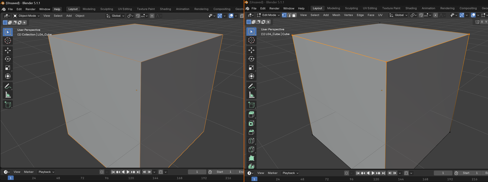
Entering and Exiting Edit Mode
⌨️ Toggle Between Modes
Tab Key: The universal mode toggle
- In Object Mode, press
Tab→ Enter Edit Mode - In Edit Mode, press
Tab→ Return to Object Mode - This works with any selected mesh object
Mode Dropdown: Top-left of viewport
- Click the dropdown showing current mode
- Select "Edit Mode" from the menu
- Slower but shows all available modes
✅ Try It Now: Enter Edit Mode
- Start with a fresh Blender scene (default cube)
- Make sure the cube is selected (orange outline)
- Press
Tabto enter Edit Mode - Notice several changes:
- The mode indicator (top-left) now says "Edit Mode"
- You see dots at the cube's corners (vertices)
- The cube appears slightly different (edit overlay)
- New options appear in the header
- Press
Tabagain to return to Object Mode - Practice toggling a few times—get comfortable with the switch
Visual Differences in Edit Mode
When you enter Edit Mode, the interface changes to show you're working at the component level:
- Orange dots: Vertices become visible as orange points
- Black edges: All edges show as black lines in solid view
- Mode-specific tools: The toolbar changes to show edit-specific tools
- Header options: Different menus appear (Mesh menu, etc.)
- Selection modes: Three icons appear showing vertex/edge/face selection
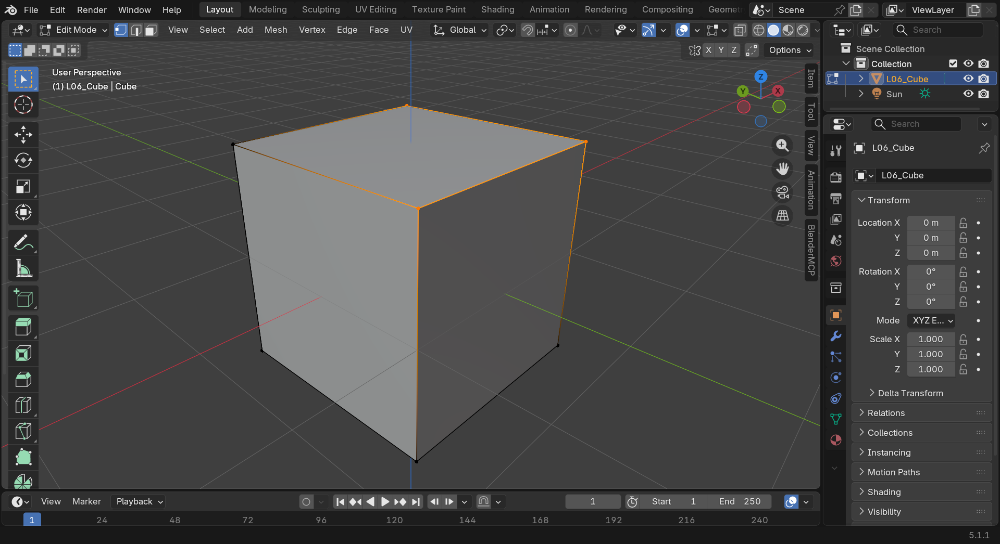
💡 Edit Mode Limitations
Important things to know about Edit Mode:
- One object at a time: You edit only the active object (though multi-object edit exists in advanced use)
- Can't add new objects: Shift+A adds geometry to current object, not new objects
- Transformations are relative: Moving vertices changes shape, not object location
- Can't use object-level tools: Modifiers, constraints work in Object Mode
When to Use Each Mode
🎯 Mode Selection Guide
Use Object Mode when you want to:
- Arrange objects in your scene
- Add new objects
- Apply modifiers or effects
- Set up animations (basic)
- Duplicate entire objects
- Work with multiple objects
Use Edit Mode when you want to:
- Change an object's shape
- Add detail to geometry
- Create custom models
- Fix mesh problems
- Prepare for UV unwrapping
- Model anything from scratch
The Mode-Switching Dance: Professional modelers constantly switch between modes. Edit Mode to shape geometry, Object Mode to check overall placement, back to Edit Mode for refinements. This becomes automatic—your fingers will press Tab without conscious thought. Embrace the mode switching—it's the natural rhythm of 3D modeling!
🎯 The Three Selection Modes
In Edit Mode, you can select and work with three different types of mesh components. Understanding when to use each selection mode is fundamental to efficient modeling.
The Selection Mode Trio
At the top of the viewport in Edit Mode, you'll see three icons representing the selection modes. You can also access them with number keys.
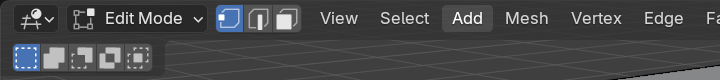
🔺 Vertex Select Mode
Icon: Single dot • | Shortcut: 1
What you select: Individual vertices (points)
When to use:
- Precise positioning of points
- Fine-tuning shapes and curves
- Merging vertices
- Creating sharp corners
- Detailed sculpting-like adjustments
Visual: Vertices appear as orange dots when selected, gray when not
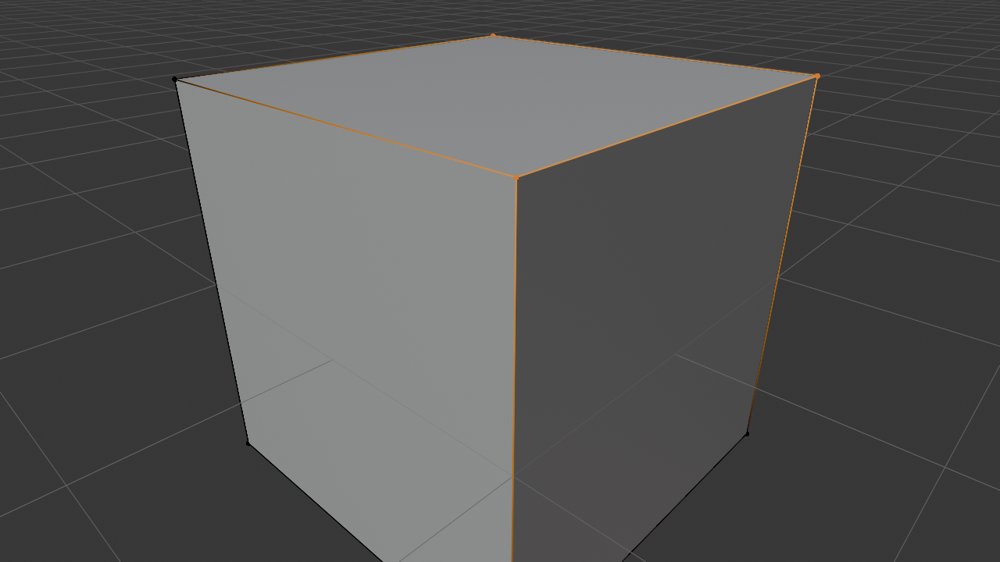
📏 Edge Select Mode
Icon: Single line — | Shortcut: 2
What you select: Edges (lines between vertices)
When to use:
- Creating edge loops
- Beveling edges for smooth corners
- Selecting perimeters or outlines
- Hard surface modeling
- Marking seams for UV unwrapping
Visual: Selected edges turn orange/bright, unselected stay dark
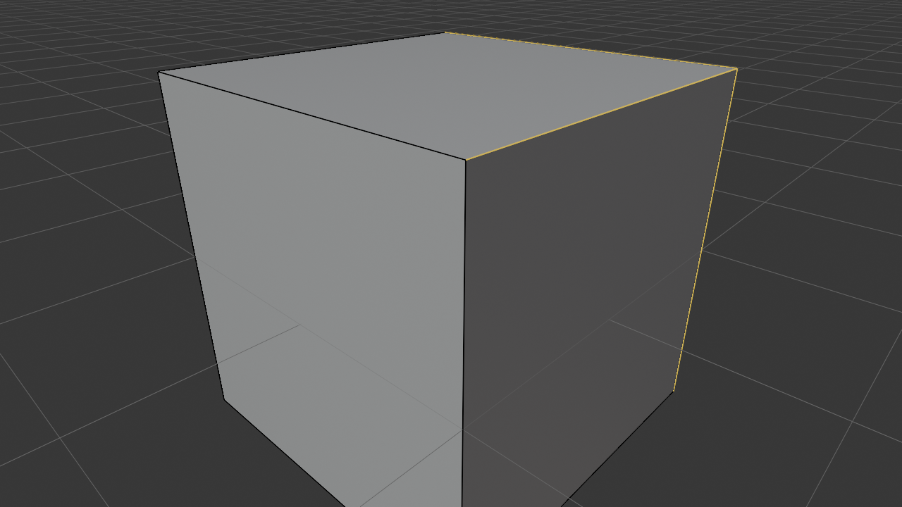
🔷 Face Select Mode
Icon: Triangle ▲ | Shortcut: 3
What you select: Faces (surfaces)
When to use:
- Extruding to build volume
- Insetting to create borders
- Deleting large areas
- Applying materials to sections
- Working with surface regions
Visual: Selected faces appear bright/filled, with dots at corners
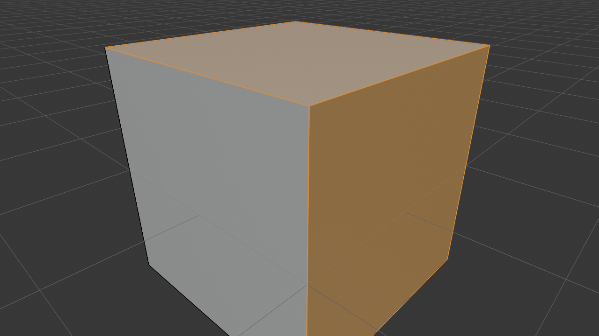
✅ Try It Now: Explore Selection Modes
- Enter Edit Mode on the default cube (
Tab) - Press
1for Vertex mode:- See 8 dots at cube corners
- Click on one vertex—it turns orange
- Shift+Click another—both selected
- Press
2for Edge mode:- Click on one edge—the line highlights
- Notice you're selecting lines now, not points
- Press
3for Face mode:- Click on one face—entire surface highlights
- Much faster for selecting large areas
- Practice switching between modes with 1, 2, 3 keys
Selection Mode Intelligence
Here's something clever: the selection modes are interconnected. When you select in one mode, you're implicitly selecting related components in other modes.
💡 Smart Selection Relationships
- Select a face: Implicitly selects its vertices and edges too
- Select an edge: Implicitly selects its two vertices
- Select a vertex: Only that point is selected
This means you can switch modes after selecting and the related components stay selected! Select faces, switch to edge mode, and those face edges are selected.
Multi-Mode Selection
You can select in multiple modes simultaneously by holding Shift while clicking the mode icons (or using Shift + number keys). This is advanced but useful:
- Vertex + Edge: Select both points and lines simultaneously
- Edge + Face: Select lines and surfaces together
- All three: Ultimate flexibility but can be confusing
For now, stick with single mode selection until you're comfortable. Multi-mode is for specific advanced workflows.
Choosing the Right Mode
Here's a quick decision guide:
🎯 Mode Selection Strategy
- Need precise point control? → Vertex mode
- Working with loops or hard edges? → Edge mode
- Extruding or working with surfaces? → Face mode
- Fine detail work? → Vertex mode
- Adding edge loops or beveling? → Edge mode
- Deleting large sections? → Face mode
Most modeling involves switching between all three modes constantly!
Professional Workflow: Experienced modelers rapidly switch between selection modes as they work. You might select faces to extrude, switch to edge mode to bevel the new edges, then vertex mode to tweak positions. The 1-2-3 keys become automatic. Don't overthink it—just use whichever mode makes your current task easiest!
🎯 Proportional Editing: The Sculptor's Touch
Imagine you're working with clay. When you push on one spot, the surrounding clay naturally moves with it, creating smooth, organic deformations. That's exactly what Proportional Editing does in Blender – it allows you to influence surrounding geometry when you transform selected elements, creating natural, flowing shapes instead of harsh, isolated changes.
This is one of those features that, once you start using it, you'll wonder how you ever modeled without it. It's absolutely essential for organic modeling, character work, and any time you need smooth, natural-looking deformations.
💡 When to Use Proportional Editing
- Organic shapes: Smoothing terrain, sculpting character features
- Smooth transitions: Creating natural bulges or dents
- Landscape modeling: Raising hills or creating valleys
- Character refinement: Adjusting muscle groups or facial features
- Avoiding hard edges: When you need gradual, natural falloff
Activating Proportional Editing
There are several ways to enable Proportional Editing:
🎛️ Activation Methods
- Keyboard shortcut: Press O to toggle on/off (you'll see a circle icon in the header)
- Header icon: Click the proportional editing icon in the 3D Viewport header (looks like a circle with gradient)
- Connected only: Press Alt+O for proportional editing that only affects connected geometry
Visual indicator: When active, you'll see a circle around your cursor when transforming – this shows the influence area!
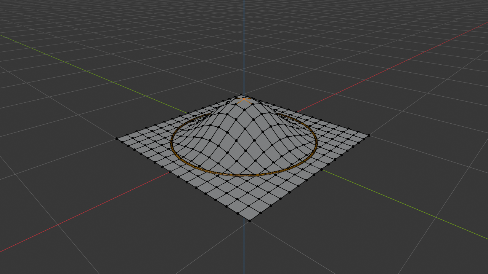
Falloff Types: Controlling the Influence
The falloff determines how the influence decreases from the selected element to the outer edge. Think of it like different types of brushes in painting – some have soft edges, some are sharp, some are completely smooth.
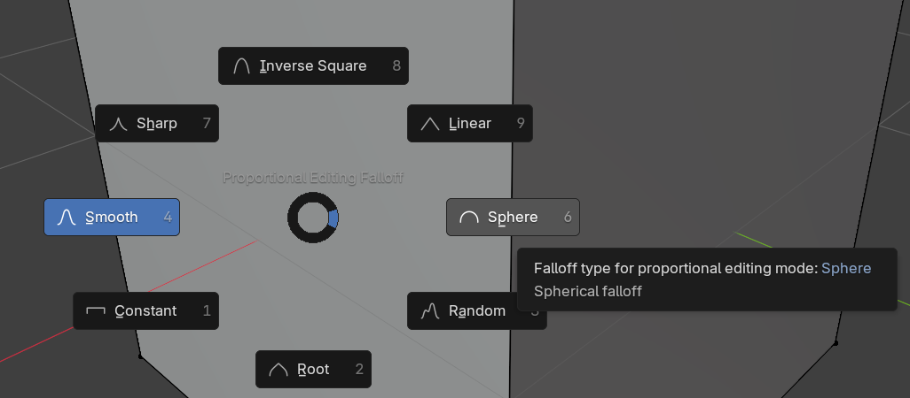
| Falloff Type | Description | Best For | Shortcut |
|---|---|---|---|
| Smooth | Gradual, natural curve (default) | Organic shapes, character work | Shift+O → Select |
| Sphere | 3D spherical falloff | Bulges, bumps, uniform influence | Shift+O → Select |
| Sharp | Quick dropoff, maintains more area | Mountains, spikes, focused edits | Shift+O → Select |
| Linear | Even, straight gradient | Mechanical tapers, ramps | Shift+O → Select |
| Constant | Same strength throughout (no falloff) | Uniform movement of area | Shift+O → Select |
| Random | Chaotic, unpredictable influence | Rough terrain, noise effects | Shift+O → Select |
💡 Pro Tip: Adjusting Influence Size
While transforming with proportional editing active:
- Mouse wheel up/down: Increase or decrease the influence radius
- Page Up/Page Down: Alternative method to adjust radius
- Watch the circle: The circle shows you exactly what will be affected
This is real-time adjustment – scroll during your move to fine-tune the effect!
Proportional Editing Workflow
📋 Step-by-Step Process
- Select the vertex, edge, or face you want to move
- Enable proportional editing by pressing O
- Start your transform (G to move, R to rotate, S to scale)
- Adjust the influence radius using the mouse wheel
- Change falloff type if needed by pressing Shift+O
- Complete the transform by clicking or pressing Enter
Real-World Example: Imagine you're modeling a character's cheek. You select a single vertex where the cheekbone should protrude, enable proportional editing with smooth falloff, and pull it outward. Instead of just one vertex poking out unnaturally, the entire surrounding area moves smoothly with it, creating a natural, rounded cheekbone. That's the power of proportional editing!
Connected vs. Projected
Blender offers two modes of proportional editing, and understanding the difference is crucial:
| Mode | Behavior | Best For | Shortcut |
|---|---|---|---|
| Projected | Affects all vertices within radius, even disconnected ones | Terrain, overlapping geometry, general modeling | O |
| Connected | Only affects vertices connected by edges | Isolated shapes, when you don't want to affect nearby disconnected geometry | Alt+O |
⚠️ Watch Out: Hidden Geometry
Proportional editing affects geometry even if it's behind other faces in your view! If you're getting unexpected results, try:
- Switching to Connected mode (Alt+O)
- Using X-ray mode to see what's being influenced
- Hiding parts of your mesh you don't want to affect (H)
Practice Exercise: Creating a Hill
🎯 Try It Now: Proportional Editing Practice
- Add a plane (Shift+A → Mesh → Plane)
- Subdivide it multiple times (Right-click → Subdivide, repeat 4-5 times)
- Enter Edit Mode (Tab)
- Select a vertex near the center (Alt+A to deselect all first)
- Enable proportional editing (O)
- Choose Smooth falloff (Shift+O)
- Press G Z to move up on Z-axis
- Use mouse wheel to adjust influence size
- Click to confirm – you've created a hill!
Experiment: Try different falloff types to see how they affect the hill shape!
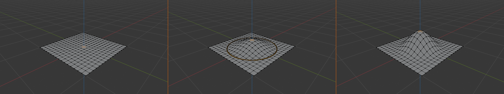
🔄 Loop Tools: The Precision Circle Makers
Loop tools are like having a master geometric wizard at your fingertips. They take your edge loops and faces and perform magical transformations – creating perfect circles, smooth bridges, and elegant curves. These are absolutely essential for hard-surface modeling, mechanical parts, and any time you need geometrically precise shapes.
📦 What Are Loop Tools?
Loop Tools is an add-on that ships with Blender but needs to be activated. It provides a collection of utilities specifically designed for working with edge loops and creating curved, circular, and interpolated geometry.
Think of it as: A Swiss Army knife for loop-based modeling operations.
Enabling Loop Tools Add-on
🔌 Activation Steps
- Go to Edit → Preferences (F4 then type "preferences")
- Click the Get Extensions tab on the left
- Search for "looptools" in the search box (one word, no space)
- Click Install on the LoopTools entry
- Close preferences – the add-on is now installed and active!
Once enabled, you'll find Loop Tools in the right-click menu when edges are selected, and in the Sidebar (N key) under the "Edit" tab.

Essential Loop Tools Operations
Circle: Creating Perfect Rounds
The Circle tool transforms a selected edge loop into a perfect circle or ellipse. This is invaluable when you need precise circular geometry – think wheels, pipes, holes, or any mechanical component.
🎯 How to Use Circle
- Select an edge loop (Alt+Click on an edge)
- Right-click and choose Loop Tools → Circle
- Or press N for sidebar → Edit tab → Loop Tools → Circle
- The loop instantly transforms into a perfect circle!
| Circle Options | What It Does | When to Use |
|---|---|---|
| Regular | Creates a circle with vertices evenly spaced | Default for most circular shapes |
| Fit | Fits circle to the original selection bounds | When you want to maintain the general shape |
| Influence | Partial transformation (0-100%) | For subtle rounding, not full circles |
| Lock X/Y/Z | Prevents movement on specific axis | When you want to flatten in specific plane |
Pro Modeling Tip: When modeling machinery or hard-surface objects, you'll often start with rough shapes and use Circle to perfect the round components. For example, model a rough wheel hub, select the outer edge loop, apply Circle, and boom – instant precision!
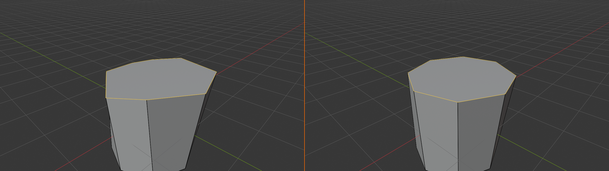
Curve: Smooth Flowing Lines
The Curve tool creates a smooth, flowing curve between two selected vertices, based on the surrounding geometry. It's like asking Blender, "make this look naturally curvy."
📐 Curve Usage
- Select a series of connected edges or vertices
- Right-click → Loop Tools → Curve
- The middle vertices adjust to create a smooth curve
- End vertices stay locked in place as curve handles
✅ When to Use Curve
- Smooth transitions: Between two points on a surface
- Organic shapes: Creating natural flowing lines
- Edge flow cleanup: Fixing awkward edge paths
- Profile edges: Creating smooth silhouettes
Flatten: Aligning to a Plane
Flatten takes selected vertices and projects them onto a plane. Think of it like pressing geometry against an invisible flat surface – incredibly useful for creating flat faces or aligning vertices perfectly.
🎚️ Flatten Options
| Mode | Result |
|---|---|
| Best Fit | Finds the best-fitting plane for your selection |
| View | Flattens based on your current viewport angle |
| X/Y/Z Axis | Flattens along a specific world axis |
Bridge: Connecting Edge Loops
The Bridge tool connects two separate edge loops with new geometry, creating a smooth connection between them. It's like building a tunnel between two openings.
🌉 Bridge Workflow
- Select two separate edge loops (both must have same number of edges for best results)
- Right-click → Loop Tools → Bridge
- Blender creates connecting faces between the loops
Common uses: Connecting body parts, creating pipe connections, joining separate mesh sections, making handles or attachments.
⚠️ Bridge Requirements
For Bridge to work properly:
- Both edge loops should have the same number of edges (or proportional numbers)
- The loops should be separate (not connected)
- Both loops must be boundary edges (edges with only one face)
If Bridge isn't working, check these conditions first!
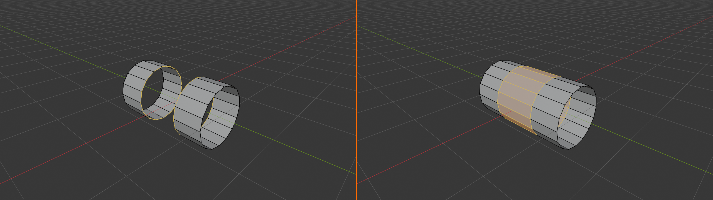
Space: Even Distribution
Space redistributes selected vertices evenly along their existing path. It's like taking a string of beads and spacing them perfectly equal distances apart.
📏 Space Usage
- Select a series of connected vertices or an edge loop
- Apply Loop Tools → Space
- Vertices redistribute evenly while maintaining the overall curve
Perfect for: Cleaning up uneven topology, preparing geometry for subdivision, creating uniform edge loops.
Relax: Smoothing Geometry
Relax averages vertex positions to create smoother, more even geometry. It's like gently massaging your mesh to relax tension and create better flow.
😌 Relax Features
- Iterations: How many times to apply smoothing (more = smoother)
- Non-destructive: Maintains your mesh's overall shape
- Improves topology: Evens out irregular vertex distribution
Loop Tools Practice Project
🛠️ Build a Pipe Connection
This exercise uses multiple Loop Tools to create a curved pipe:
- Add a cylinder (Shift+A → Mesh → Cylinder)
- Delete the top cap (Select top face, X → Faces)
- Select the top edge loop (Alt+Click)
- Extrude up (E, then Z, move up)
- Scale slightly larger (S, scale out a bit)
- Apply Circle to ensure it's perfectly round (Right-click → Loop Tools → Circle)
- Extrude again and bend it (E, move to the side)
- Select the middle edge loop of your bend
- Apply Relax to smooth the curve (Loop Tools → Relax, set iterations to 3-5)
- Select all edge loops along the pipe
- Apply Space to even out the spacing (Loop Tools → Space)
Result: A smooth, perfectly circular pipe with even topology!
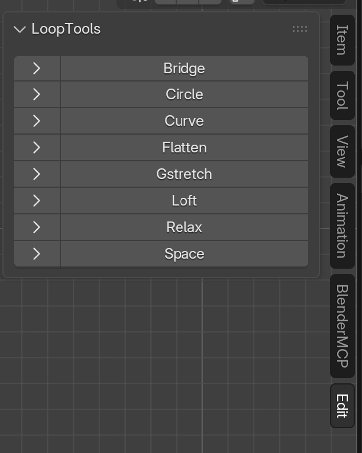
Industry Insight: Professional hard-surface modelers rely heavily on Loop Tools for mechanical modeling. Cars, robots, architecture, product design – anywhere you need precise curves and perfect circles, Loop Tools is your friend. Master these tools, and you'll model hard-surface objects like a pro!
🎯 Advanced Selection Techniques
Now that you understand basic selection, let's level up your skills with advanced techniques that will make you lightning-fast and laser-precise. These methods separate beginners from professionals – not because they're hard to learn, but because they save enormous amounts of time and frustration.
Selection by Similarity (Select Similar)
Imagine you need to select all triangular faces in a complex mesh, or every edge with a specific angle. Doing this manually would take forever! That's where Select Similar comes in – it finds and selects all geometry that matches certain criteria.

🔍 How to Use Select Similar
- Select one or more elements that have the property you're looking for
- Press Shift+G (Think: "Shift-Gather similar")
- Choose from the menu what similarity to look for
- All matching geometry gets selected instantly!
Similar Selection Criteria
Depending on whether you have vertices, edges, or faces selected, you'll see different options:
| Element Type | Similarity Options | What It Finds |
|---|---|---|
| Vertices | Amount of connecting edges | Vertices with same number of edges |
| Vertex groups | Vertices in the same groups | |
| Amount of connecting faces | Vertices with same face count | |
| Edges | Length | Edges of similar length |
| Direction | Edges pointing same direction | |
| Amount of faces | Edges with same face count (useful for finding boundary edges) | |
| Face angles | Edges at similar angles to adjacent faces | |
| Crease | Edges with similar crease values | |
| Faces | Material | Faces with same material |
| Area | Faces of similar size | |
| Sides | Faces with same vertex count (find all triangles, quads, n-gons) | |
| Perimeter | Faces with similar edge length total | |
| Normal | Faces pointing in same direction | |
| Co-planar | Faces on the same plane |
💡 Pro Tip: Finding Problem Geometry
Select Similar is incredibly useful for quality control:
- Find all triangles: Select one triangle, Shift+G → Sides
- Find boundary edges: Select one boundary edge, Shift+G → Amount of Faces → 1
- Find loose vertices: Select one lone vertex, Shift+G → Amount of connecting edges → 0
- Find n-gons: Select one n-gon (5+ sides), Shift+G → Sides
Select All by Trait
While Select Similar finds elements matching your current selection, Select All by Trait (Shift+Ctrl+Alt+M or found in Select menu) selects problematic or specific geometry types directly without needing an example selected first.
🔧 Common Select All by Trait Options
- Non-Manifold: Finds problematic geometry (essential for 3D printing)
- Loose: Vertices or edges not connected to faces
- Interior Faces: Faces completely inside the mesh
- Faces by Sides: Select all triangles, quads, or n-gons directly
3D Printing Gold: Before 3D printing any model, run "Select All by Trait → Non-Manifold" to find geometry errors that will cause printing failures. A manifold mesh (no non-manifold geometry) is watertight and printable!
Checker Deselect: The Pattern Master
Checker Deselect is like creating a checkerboard pattern in your selection. It deselects every other element, which is incredibly useful for creating even, alternating patterns.
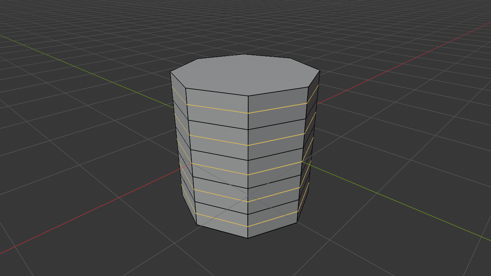
♟️ Using Checker Deselect
- Select a group of elements (faces, edges, or vertices)
- Go to Select → Checker Deselect
- Every other element gets deselected in a pattern
- You can adjust the pattern in the bottom-left operator panel
| Checker Deselect Uses | Example |
|---|---|
| Creating patterns | Alternating panels on a spaceship hull |
| Reducing geometry | Delete every other edge loop for lower poly version |
| Texture variation | Apply different materials in checkerboard pattern |
| Testing deformations | See how alternating faces behave under subdivision |
🎛️ Checker Deselect Options
After running Checker Deselect, check the bottom-left corner for options:
- Deselected: How many to deselect (e.g., 1 means every other)
- Selected: How many to keep selected (e.g., 2 means keep 2, skip 1, keep 2, skip 1...)
- Offset: Shift the pattern forward or backward
Experiment with these to create various patterns!
🎨 Advanced Selection Tools and Methods
Let's continue expanding your selection toolkit with some incredibly powerful methods that will make complex selections feel effortless. These are the techniques that separate casual users from efficient professionals.
Box Select and Circle Select
Sometimes clicking individual elements is too slow. That's when you need area selection tools – tools that let you select multiple elements at once by drawing shapes.
Box Select: The Rectangular Selector
📦 Box Select (B)
- Press B to activate Box Select mode
- Your cursor becomes a crosshair
- Click and drag to draw a rectangular selection box
- All elements inside the box get selected
- Release to confirm
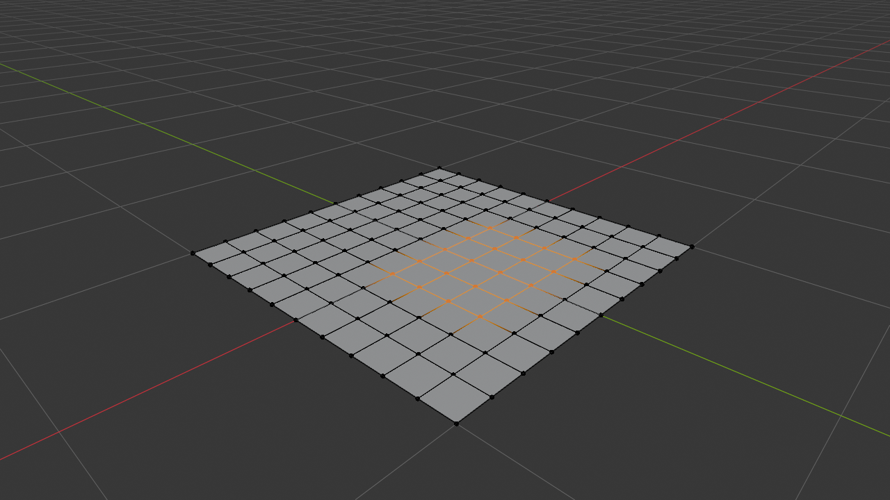
| Box Select Modifiers | Action | Result |
|---|---|---|
| B then drag | Regular box select | Selects everything in box |
| Middle Mouse while dragging | Toggle deselect mode | Deselects instead of selects |
| Shift + Box Select | Add to selection | Adds to existing selection |
| Ctrl + Box Select | Remove from selection | Subtracts from selection |
💡 Pro Tip: Multiple Box Selections
You don't have to do everything in one box! Make a box selection, then hold Shift and press B again to add more selections. Build your selection piece by piece like assembling a puzzle.
Circle Select: The Brush Tool
Circle Select is like having a paintbrush for selections. You move a circular cursor around and click (or click-drag) to select elements. It's incredibly intuitive and fast for organic, flowing selections.
⭕ Circle Select (C)
- Press C to activate Circle Select mode
- A circle cursor appears
- Left-click or click-drag to select elements under the circle
- Middle-click or hold Shift to deselect instead
- Mouse wheel to change circle size
- Press Esc or Right-click to exit mode
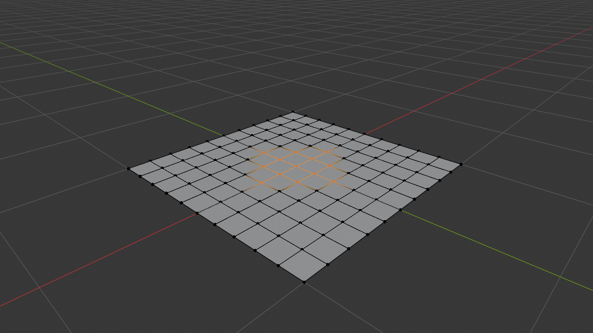
✅ When Circle Select Shines
- Organic selections: Selecting areas that don't fit in rectangles
- Painting selections: Building selections gradually by "painting" over areas
- Character work: Selecting facial features, muscle groups
- Terrain: Selecting irregular landscape areas
- Quick cleanup: Rapidly selecting scattered elements
Speed Tip: Circle Select is one of the fastest selection methods once you get used to it. Many pros use C as their default selection tool, only switching to others for specific needs. Try it for a week and it'll become second nature!
Lasso Select: Freeform Selection
Lasso Select lets you draw a freeform shape with your mouse, and everything inside gets selected. It's perfect for irregular shapes that don't fit in boxes or circles.
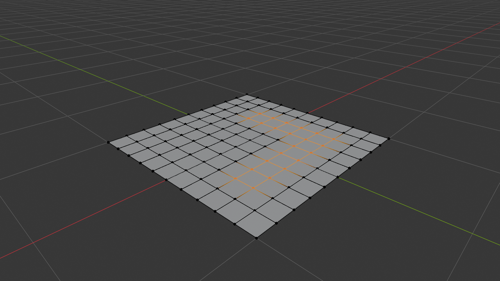
🎯 Lasso Select
Two activation methods:
- Regular Lasso: Ctrl+Right-Click and drag to draw
- From menu: Select menu → Lasso Select
How it works:
- Hold Ctrl+Right-Click (or activate from menu)
- Draw a shape around what you want to select
- Complete the loop (return to start point)
- Everything inside gets selected
| Selection Tool | Best For | Speed | Precision |
|---|---|---|---|
| Click Select | Individual elements, precise work | Slow | Highest |
| Box Select (B) | Rectangular areas, grid-like selections | Fast | Good |
| Circle Select (C) | Organic areas, painting selections | Very Fast | Good |
| Lasso Select | Irregular shapes, complex outlines | Medium | Very Good |
| Select Similar | Scattered elements with common traits | Instant | Perfect |
Selection Practice Challenge
🎮 Selection Speed Challenge
Test and improve your selection skills with this exercise:
- Add a UV Sphere (Shift+A → Mesh → UV Sphere)
- Enter Edit Mode (Tab)
- Switch to Face Select mode (3)
- Now try selecting different patterns as fast as you can:
- Challenge 1: Select all faces on the top hemisphere (use Box Select)
- Challenge 2: Deselect just the tip (use Circle Select)
- Challenge 3: Select an equator band around the middle (use Alt+Click for loop, then expand)
- Challenge 4: Select every other face in a checkerboard pattern (Select All, then Checker Deselect)
- Challenge 5: Select just one side (use Lasso Select)
Goal: Complete all 5 challenges in under 2 minutes. Practice until you can!
🎨 Inset and Outset: Creating Details
Imagine you have a face and you want to create a border around it, or make a smaller face inside it. That's exactly what Inset does – it creates a new face inside the selected faces, connected by new edges. It's like creating a picture frame effect, and it's absolutely essential for adding detail to your models.
💡 Why Inset Is Essential
Inset is one of those operations you'll use constantly because it:
- Adds topology: Creates edge loops exactly where you need them
- Creates details: Panel lines, borders, windows, decorative elements
- Maintains quads: Keeps your geometry clean (mostly)
- Works on multiple faces: Can inset many faces simultaneously
- Prepares for extrusion: Perfect setup for adding 3D details
Basic Inset Operation
📐 How to Inset Faces
- Enter Edit Mode (Tab)
- Switch to Face Select mode (3)
- Select one or more faces
- Press I (for Inset)
- Move your mouse inward – new faces appear!
- Click to confirm (or type exact value)
![Three-panel horizontal composite showing the inset operation on a cube. Left panel: cube in Edit Mode with face select active and the top face selected in orange, no inset applied yet. Middle panel: the same cube after pressing I and moving the mouse inward, with a new inner face inside an outer border ring of four fresh quad faces; the new inner face is still selected. Right panel: a deeper inset progression with a second inset stacked on the inner face, producing two concentric inset borders. 2 px Blender-orange vertical dividers separate the panels.](images/lesson_06_17_inset_operation_progression.png)
Inset Options and Modifiers
While insetting, you have several powerful options accessible via keyboard modifiers:
| Modifier | Effect | Use Case |
|---|---|---|
| I then move mouse | Regular inset | Default inset operation |
| O (during inset) | Toggle outset mode | Inset outward instead of inward |
| B (during inset) | Toggle boundary mode | Maintain or modify outer boundary |
| I (during inset) | Toggle individual faces | Inset each face separately vs. as group |
| Ctrl (during inset) | Depth mode | Extrude inward while insetting |
🎛️ Individual vs. Group Inset
This is a critical distinction:
- Group Inset (default): All selected faces inset together as one unit, creating a single border
- Individual Inset: Press I again while insetting – each face gets its own separate inset
Quick test: Select two adjacent faces, press I and move. Then press I again while still insetting. See the difference? Each face now has its own border!
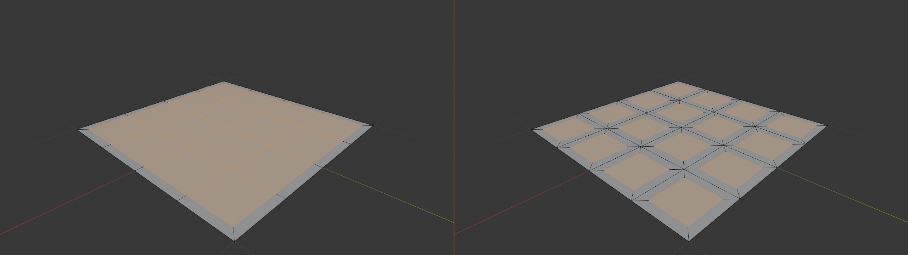
Common Inset Patterns
The "Double Inset" Technique: A professional modeling trick – select faces, inset once for a border, then inset again to create a second inner border. This creates beautiful panel detail with depth. Then extrude the innermost faces for 3D pop! This is used everywhere in hard-surface modeling.
![Four-panel horizontal composite showing the double-inset sci-fi panel technique on a cube. Panel 1: cube with its top face selected in orange, no inset applied. Panel 2: first inset applied, creating an outer border ring of four quads with a smaller inner face still selected. Panel 3: second inset applied to the inner face, creating an inner border ring nested inside the outer one. Panel 4: the innermost face extruded downward to create a recessed sci-fi panel detail. 2 px Blender-orange vertical dividers separate every pair of panels.](images/lesson_06_19_inset_double_technique.png)
Outset: The Reverse Inset
While Inset creates faces inside your selection, Outset does the opposite – it creates faces outside your selection, expanding it outward. Press O during an inset operation to toggle between inset and outset modes.
🔄 Outset Uses
- Expanding plates: Making armor pieces larger
- Creating flanges: Edges that extend outward
- Border extensions: Adding material around edges
- Foundation building: Creating base geometry to build upon
Inset with Depth
Hold Ctrl while insetting to add depth – it insets AND moves the new faces inward along the face normal. It's like creating a recessed panel in one operation!
✨ Pro Workflow: Creating Panel Lines
Professional hard-surface technique for panel details:
- Select face where you want panel detail
- Press I, move mouse for first border (thin)
- Click to confirm
- Press I again, move mouse for second border (wider)
- Hold Ctrl and move mouse to add depth
- Click to confirm
- Result: Professional recessed panel with clean beveled edges!
Inset Practice Project
🛠️ Build a Sci-Fi Panel
Create a detailed sci-fi surface panel using inset:
- Start with a cube (Shift+A → Mesh → Cube)
- Enter Edit Mode (Tab)
- Select the top face (Face select mode, click the top)
- Subdivide it 2-3 times (Right-click → Subdivide)
- Select random faces to be your "panels"
- First inset (I, move in slightly) for outer border
- Second inset (I, move in more) for inner border
- Inset with depth (select inner faces, I then hold Ctrl)
- Extrude some outward (E) for raised panels
- Result: Detailed sci-fi surface with multiple panel depths!
Bonus: Add more detail with additional insets on individual panels!
🧹 Mesh Cleanup and Optimization
Creating geometry is fun, but maintaining clean topology is what separates hobbyist models from professional work. Clean meshes deform better, subdivide better, render faster, and are easier to work with. Let's learn the essential cleanup operations.
⚠️ Why Mesh Cleanup Matters
Poor topology causes:
- Rendering artifacts: Strange shading, visible triangles
- Deformation problems: Character animation breaking
- Subdivision issues: Weird bumps and pinching
- 3D printing failures: Non-manifold geometry won't print
- File size bloat: Unnecessary geometry slows everything down
Remove Doubles (Merge by Distance)
Remove Doubles (now called "Merge by Distance" in modern Blender) finds vertices that are very close together and merges them into one. This fixes one of the most common modeling problems: duplicate vertices that look like one but are actually separate.
🔗 Merge by Distance
How to use:
- Select all vertices (A in Edit Mode)
- Press M for Merge menu
- Choose "By Distance"
- Check the bottom-left corner to see how many vertices were merged
Or: Mesh menu → Clean Up → Merge by Distance

| Setting | What It Does | Typical Value |
|---|---|---|
| Merge Distance | Maximum distance for merging vertices | 0.0001 - 0.001 (default: 0.0001) |
| Unselected | Include unselected vertices in search | Usually disabled |
Pro Habit: Get in the habit of running Merge by Distance after any operation that might create duplicate vertices – especially after scaling to zero, snapping operations, or importing models. Check the counter – if it says "Removed 0 vertices," your mesh was already clean!
💡 Finding Hidden Doubles
Sometimes you have edges or faces that look weird but you can't see why. Try this:
- Select all (A)
- Merge by Distance (M → By Distance)
- If vertices merge, you had doubles!
- The count at bottom-left shows how many were removed
Dissolve vs. Delete
Understanding the difference between Delete and Dissolve is crucial for clean modeling. Both remove geometry, but they work very differently.
| Operation | What It Does | Shortcut | Result |
|---|---|---|---|
| Delete | Removes geometry and creates holes | X → Delete | Holes in mesh where deleted geometry was |
| Dissolve Vertices | Removes vertices, merges connected edges | X → Dissolve Vertices | Clean topology, no holes |
| Dissolve Edges | Removes edges, merges adjacent faces | X → Dissolve Edges | Larger faces, clean topology |
| Dissolve Faces | Removes faces, keeps vertices/edges | X → Dissolve Faces | Wire frame of original faces |
| Limited Dissolve | Smart dissolve of unnecessary edges | X → Limited Dissolve | Simplified, optimized mesh |
🎯 When to Use Each
- Delete: Removing entire sections (faces you don't want)
- Dissolve Vertices: Removing unnecessary vertices while keeping faces
- Dissolve Edges: Simplifying edge loops, removing edge flow
- Limited Dissolve: Automated cleanup of flat, unnecessary edges
Limited Dissolve: The Smart Cleanup
Limited Dissolve is like having an intelligent assistant that removes unnecessary edges while keeping your mesh's shape intact. It analyzes face angles and only dissolves edges where faces are nearly coplanar (flat).
🤖 Limited Dissolve Workflow
- Select the geometry you want to optimize (or select all with A)
- Press X → Limited Dissolve
- Adjust Max Angle in bottom-left operator panel
- Lower angle = more conservative, higher = more aggressive
| Max Angle Setting | Effect | Best For |
|---|---|---|
| 1-5 degrees | Very conservative, only obvious flat areas | Hard-surface models, flat panels |
| 5-15 degrees | Moderate cleanup, gentle curves preserved | General optimization (default: 5°) |
| 15-30 degrees | Aggressive, simplifies more curves | Low-poly versions, game models |
Import Cleanup Trick: When you import models from other software (especially CAD), they often have way too many tiny flat faces. Select all, run Limited Dissolve at 5 degrees, and watch thousands of unnecessary edges vanish while the shape stays perfect!
![Two-panel horizontal composite showing Limited Dissolve cleaning an over-subdivided cube. Left panel: a cube subdivided three times on every face producing a dense 4-by-4 quad grid on each of its six faces (96 quads total) with the full wireframe overlay enabled so the excessive edge density reads clearly. Right panel: the same cube after Limited Dissolve at a 5-degree angle limit, with all coplanar interior edges removed and the cube reduced back to its original six-quad form. The shape and silhouette are identical between the two panels. A 2 px Blender-orange vertical divider separates them.](images/lesson_06_22_limited_dissolve_before_after.png)
Fill and Grid Fill
Sometimes you need to fill holes in your mesh. Blender offers several intelligent fill options:
🔌 Fill Operations
| Fill Type | How to Use | Result |
|---|---|---|
| Fill (F) | Select vertices/edges, press F | Simple face connecting selected elements |
| Grid Fill | Select edge loop, Face → Grid Fill | Organized grid of faces |
| Triangle Fill | Select edge loop, Alt+F | Triangulated fill (Beauty Fill) |
✅ Grid Fill for Clean Topology
Grid Fill is amazing for filling rectangular holes with perfect quad topology:
- Select a rectangular hole (the edge loop around it)
- Face menu → Grid Fill
- Adjust Span and Offset in operator panel
- Result: Perfect grid of quad faces!
Requirement: The hole must have an even number of edges (4, 8, 12, etc.)
![Three-panel horizontal composite showing three different fill operations on the same square hole in a cube. Left panel: the hole filled with Simple Fill (F key), producing a single n-gon face spanning the boundary loop. Middle panel: the hole filled with Grid Fill, producing an organized grid of quad faces with clean topology. Right panel: the hole filled with Fill followed by Poke, fan-triangulating the result around a central vertex. The wireframe overlay is enabled across all three panels so the topology difference reads clearly. 2 px Blender-orange vertical dividers separate the panels.](images/lesson_06_50_fill_operations_comparison.png)
Recalculate Normals
Normals are invisible arrows pointing outward from each face, telling Blender which side is the "outside." When normals are flipped, faces render as black or transparent. Recalculating fixes this instantly.
🔄 Fix Flipped Normals
- Select all geometry (A)
- Press Shift+N (Recalculate Normals)
- Or: Mesh menu → Normals → Recalculate Outside
- All faces now point outward correctly!

💡 Seeing Normals
To visualize normals in Edit Mode:
- Open Overlay dropdown (top-right of viewport)
- Enable Face Orientation
- Blue faces = correct (outside), Red faces = flipped (inside)
Or show normal lines: Overlays → Normals → check Face/Vertex
Mesh Cleanup Practice
🧹 Cleanup Challenge
Practice mesh cleanup with this exercise:
- Add a UV Sphere (Shift+A → Mesh → UV Sphere)
- Enter Edit Mode (Tab)
- Delete half (Box select half, X → Faces)
- Scale some vertices to 0 (select a few, S → 0) - creates doubles!
- Flip some normals (select faces, Mesh → Normals → Flip)
- Now clean it up:
- Merge by Distance (M → By Distance) - removes doubles
- Recalculate Normals (Shift+N) - fixes flipped faces
- Fill the hole (select edge loop, F) - closes missing geometry
- Limited Dissolve (X → Limited Dissolve) - optimizes if needed
Result: A clean, properly optimized half-sphere!
🚀 Extrude: The Model Builder's Best Friend
If there's one operation that defines 3D modeling, it's Extrude. Extrude takes selected geometry and extends it outward, creating new faces, edges, and vertices connected to the original. Think of it like pulling taffy – you're stretching your mesh in a direction, creating new geometry as you go. This is how most 3D models are built: start with a simple shape, then extrude, extrude, extrude until you have something complex and beautiful.
💡 Why Extrude Is Fundamental
Extrude is the backbone of polygon modeling because it:
- Creates connected geometry: New faces stay attached to the original mesh
- Maintains topology: Keeps your mesh as one continuous piece
- Builds complexity: Transform simple shapes into complex models
- Works on everything: Extrude vertices, edges, or faces
- Incredibly versatile: Can be combined with other tools for endless possibilities
Basic Extrude Operation
🎯 How to Extrude
- Enter Edit Mode (Tab)
- Select geometry (vertices, edges, or faces)
- Press E for Extrude
- Move your mouse – new geometry extends from selection
- Click to confirm (or press Enter)
Quick tip: After pressing E, you can type a number for exact distance!
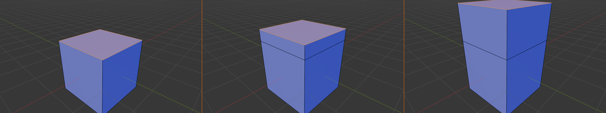
Extrude Modes: Understanding the Differences
Blender offers several extrude modes depending on what you have selected and what you want to achieve. Understanding these different modes is crucial for efficient modeling.
| What's Selected | Press E | What Happens | Best For |
|---|---|---|---|
| Faces | Extrude Faces | Creates new face(s) connected by side walls | Building volumes, adding details |
| Edges | Extrude Edges | Creates new edge(s) with connecting face(s) | Creating edge loops, extending surfaces |
| Vertices | Extrude Vertices | Creates new vertex/vertices with connecting edges | Creating edge paths, branching geometry |
Constrained Extrude: Staying on Track
One of the most powerful features of extrude is the ability to constrain it to specific axes or directions. This keeps your extrusions precise and predictable.
🎚️ Extrude Along Axes
After pressing E, immediately press an axis key:
- E then X – Extrude along X-axis (red)
- E then Y – Extrude along Y-axis (green)
- E then Z – Extrude along Z-axis (blue)
Example: E, Z, 2, Enter = Extrude exactly 2 units up on Z-axis!
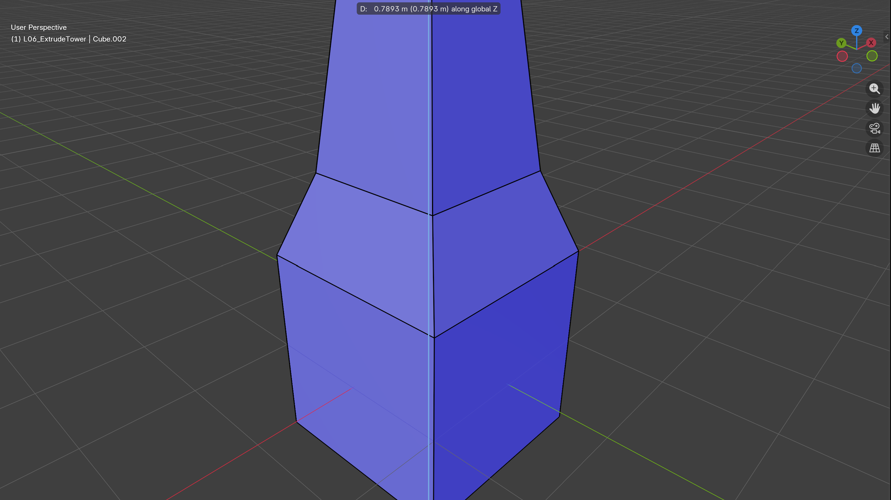
💡 Pro Tip: Extrude Along Normals
Press Alt+E to access the Extrude menu, which includes:
- Extrude Along Normals: Each face extrudes perpendicular to itself (even on curved surfaces!)
- Extrude Individual: Each selected face extrudes separately
- Extrude to Cursor: Extrudes directly toward 3D cursor position
Extrude Along Normals is incredibly useful for organic shapes!

Extrude Individual vs. Group
This is a critical distinction that trips up beginners but becomes second nature with practice:
![Two-panel horizontal composite contrasting regular extrude with extrude along normals on a UV sphere. Left panel labeled `REGULAR`: eight contiguous equatorial faces extruded together along the global X axis form a flat block-like bulge on one side of the sphere. Right panel labeled `ALONG NORMALS`: the same eight-face band extruded along normals produces a radial bulge in which each face moves perpendicular to its own surface. A 2 px Blender-orange vertical divider separates the panels and positive-green pill badges at the bottom of each panel name the extrude mode.](images/lesson_06_25_extrude_normals_vs_regular.png)
| Mode | How to Access | Result | Use Case |
|---|---|---|---|
| Group Extrude | E | All selected faces extrude together as one piece | Building connected volumes, continuous surfaces |
| Individual Faces | Alt+E → Extrude Individual | Each face extrudes separately, creating individual columns | Creating spikes, pillars, repeated details |
| Along Normals | Alt+E → Along Normals | Each face extrudes perpendicular to itself | Organic shapes, curved surfaces, consistent thickness |
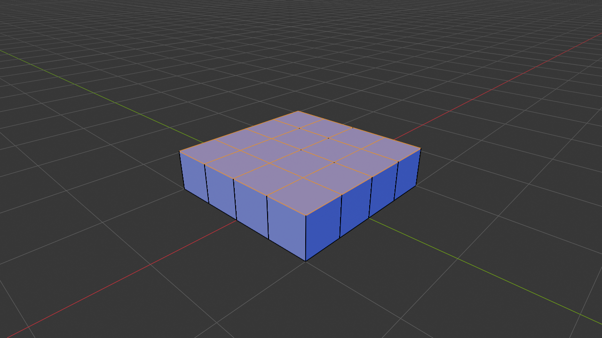
Real-World Example: Imagine you're modeling a city skyline. Select all the building base faces. Use Extrude Individual and move up – boom, instant buildings of varying heights! Each building is its own column, but you created them all in one operation. That's the power of individual extrude!
Extrude and Scale: Creating Tapers
A common modeling technique is to extrude and immediately scale, creating tapered or pyramidal shapes. This is done all the time in character modeling, architecture, and mechanical design.
📐 The Extrude-Scale Workflow
- Select face(s) and press E to extrude
- Move outward to create extension
- Confirm with click
- Immediately press S to scale
- Scale smaller (or larger) to create taper
- Repeat for multiple tapered sections
Pro technique: E, move, S, Shift+Z (scale on X and Y only, not Z) for perfect cylindrical taper!
✅ Common Extrude-Scale Patterns
- Towers: Extrude up, scale in, extrude up, scale in = tapered tower
- Limbs: Extrude, scale down gradually = arm/leg that gets thinner
- Tree trunks: Extrude up, scale slightly in = realistic trunk taper
- Bottles: Extrude up, scale, extrude, scale out = bottle neck shape
- Horns/spikes: Extrude, scale down aggressively = sharp spike
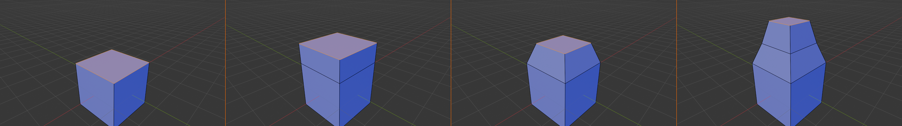
Extrude and Rotate: Creating Curves
Combining extrude with rotation lets you create curved, bent, or twisted geometry. This is essential for organic modeling and creating flowing shapes.
🌀 Extrude-Rotate Technique
- Extrude (E) and move
- Press R to rotate the new geometry
- Choose rotation axis (X, Y, or Z)
- Rotate to desired angle
- Repeat to create curved paths
Creates: Bent pipes, curved horns, spiral staircases, twisted tentacles, flowing ribbons
Canceling Bad Extrudes
Made a mistake during extrude? Don't panic! Here's how to fix it:
⚠️ Fixing Extrude Mistakes
If you haven't confirmed yet:
- Press Esc or Right-click – cancels the operation completely
If you already confirmed:
- Ctrl+Z – Undo the extrude
- Or press Alt+M → Merge → At Center – merges the new vertices back (if you didn't move far)
If you pressed E but didn't move: You've created duplicate geometry on top of the original! Press Alt+M → Merge → By Distance to clean it up.
Extrude Practice Project
🏗️ Build a Simple Tower
Practice different extrude techniques by building a tower:
- Start with a cube (Shift+A → Mesh → Cube)
- Delete the top face (Tab to Edit Mode, select top, X → Faces)
- Select the top edge loop (Alt+Click on edge)
- Extrude up (E, Z, 2, Enter)
- Scale inward (S, Shift+Z, 0.8, Enter)
- Repeat 3-4 times: Extrude up, scale in slightly each time
- Final extrude: E, Z, 1, then S, 0.3 for pointed top
- Cap it: Press F to fill the top with a face
Result: A tapered tower with realistic proportions!
Bonus: Add windows using Inset (I) and Extrude inward!
📋 Duplicate and Array: Multiplying Your Work
Why model something ten times when you can model it once and multiply it? Duplicate and Array are two powerful operations that let you create multiple copies of geometry quickly and efficiently. These are essential for creating repeated elements like windows, teeth, fence posts, building details, or any repeating pattern.
Duplicate: Quick Copies
Duplicate creates an independent copy of selected geometry that you can immediately move, rotate, or scale. It's like copy-paste, but specifically for 3D geometry within Edit Mode.
📋 How to Duplicate
- Select geometry in Edit Mode
- Press Shift+D (Duplicate)
- Move the duplicate to desired location
- Click to confirm
Constrain it: After Shift+D, press X, Y, or Z to move along an axis!
| Operation | Shortcut | What It Does | When to Use |
|---|---|---|---|
| Duplicate | Shift+D | Creates independent copy in Edit Mode | Manual placement of copies, irregular spacing |
| Duplicate Linked | Alt+D | Creates linked copy (changes affect all) | When you want copies to share the same mesh data |
💡 Duplicate vs. Extrude
Beginners often confuse these:
- Extrude (E): Creates new geometry connected to original – makes one continuous mesh
- Duplicate (Shift+D): Creates new geometry separate from original – makes independent pieces
Rule of thumb: If it should be one piece, use Extrude. If it should be separate pieces, use Duplicate.
Array Modifier: Parametric Repetition
While Duplicate creates copies manually, the Array Modifier creates parametric copies that update automatically. This is incredibly powerful for creating evenly-spaced repeating elements.
🔢 Array Modifier Workflow
Note: Array is a modifier, so you apply it in Object Mode, not Edit Mode!
- Select your object in Object Mode
- Go to Modifiers panel (wrench icon on right sidebar)
- Click Add Modifier → Array
- Adjust Count for number of copies
- Adjust Offset for spacing
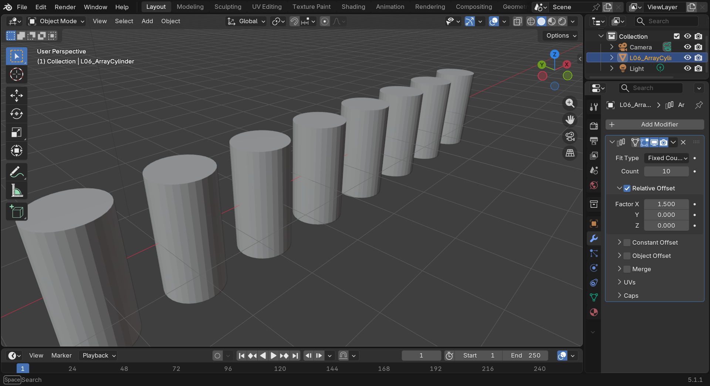
Array Modifier Options
| Setting | What It Does | Example Use |
|---|---|---|
| Count | Number of copies (including original) | 10 = original + 9 copies |
| Relative Offset | Spacing based on object size (X, Y, Z) | X=1 means space one object-width apart |
| Constant Offset | Fixed distance in Blender units | Exact spacing regardless of object size |
| Object Offset | Use another object's position for offset | Create curved or circular arrays |
| Merge | Fuses copies if vertices overlap | Create seamless continuous geometry |
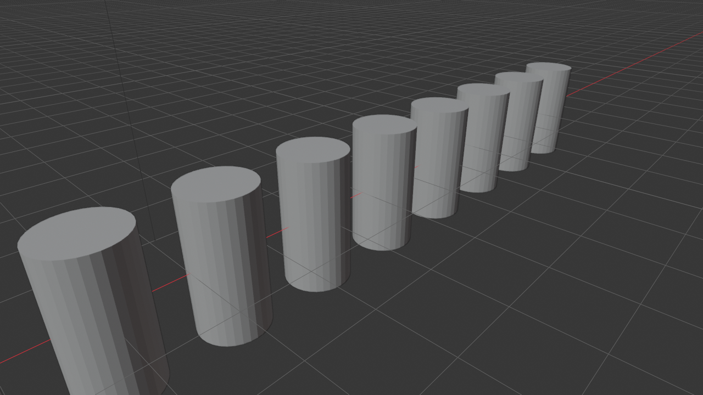
✨ Array Modifier Power Moves
Circular arrays:
- Add an Empty object at center (Shift+A → Empty)
- Enable Object Offset in Array Modifier
- Select the Empty as offset object
- Rotate the Empty – your array follows the curve!
Creates: Circular patterns, radial symmetry, gears, flowers, decorative elements
Duplicate Special: Advanced Copying
The Duplicate menu (Shift+D then check bottom-left) has options that give you more control over how copies are created:
🎛️ Duplicate Options
- Mode: Translation (move), Rotation, Scale
- Number of copies: Create multiple at once
- Relative/Absolute: How offset values are interpreted
Access these in the Adjust Last Operation panel (bottom-left after duplicating)
Practical Duplicate Techniques
The "Duplicate Chain" Technique: A fast way to create evenly-spaced elements – Duplicate (Shift+D), move to position, confirm. Then immediately press Shift+R to repeat the last operation! Keep pressing Shift+R and Blender keeps duplicating at the same distance. Super fast for fence posts, columns, steps, etc.
🔄 Shift+R: Repeat Last Operation
This is one of Blender's most powerful shortcuts:
- Works with any operation – not just duplicate!
- Extrude, duplicate, scale, rotate – all can be repeated
- Saves enormous amounts of time on repetitive tasks
Example workflow:
- Extrude a face up 2 units
- Press Shift+R – extrudes another 2 units
- Keep pressing Shift+R – creates steps/ladder automatically!
Duplicate and Array Practice
🏛️ Create a Colonnade
Practice duplicate and array by building a row of columns:
Method 1: Manual Duplicate
- Add a cylinder (Shift+A → Mesh → Cylinder, scale to column proportions)
- Enter Edit Mode (Tab)
- Select all (A)
- Duplicate (Shift+D, Y, 4, Enter) – moves 4 units along Y
- Repeat with Shift+R 8-10 times for multiple columns
Method 2: Array Modifier
- Add a cylinder, exit Edit Mode to Object Mode
- Add Array Modifier (Modifiers panel → Add Modifier → Array)
- Set Count to 10
- In Relative Offset, set Y to 2 (spacing between columns)
- Adjust count or offset in real-time – see changes immediately!
- When satisfied, click Apply to make permanent
Compare: Array is faster and more flexible for even spacing. Duplicate gives more manual control!
🌀 Spin and Screw: Rotational Modeling
Some of the most elegant and efficient modeling techniques involve rotation. Why model a vase by hand when you can draw half its profile and spin it 360 degrees? Spin and Screw are powerful operations that create geometry by rotating selections around an axis. These are essential for creating symmetric, circular, or threaded objects.
Spin: Creating Radial Geometry
Spin takes your selected geometry and rotates it around the 3D cursor, creating copies at regular intervals. Think of it like a pottery wheel – you define the profile, and Spin creates the full circular form.
🎡 How to Use Spin
- Create a profile edge (the cross-section of what you want)
- Position 3D Cursor at the center of rotation (Shift+Right-Click)
- Select the profile geometry
- Go to Mesh menu → Spin (or search with F3)
- Adjust settings in operator panel (bottom-left)
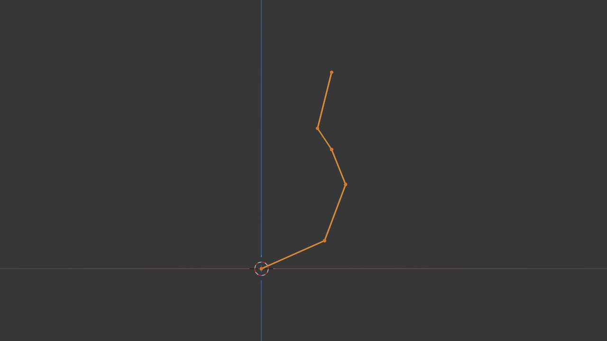
Spin Settings
| Setting | What It Does | Typical Value |
|---|---|---|
| Steps | Number of segments created | 16-32 for smooth circles, 4-8 for angular shapes |
| Angle | Degrees to rotate (360° = full circle) | 360° for complete objects, 180° for half-circles |
| Axis | Which axis to spin around (X, Y, or Z) | Depends on your object orientation |
| Center | Point to rotate around | Usually 3D cursor position |
| Duplicate | Keep original profile or not | Usually disabled for complete objects |
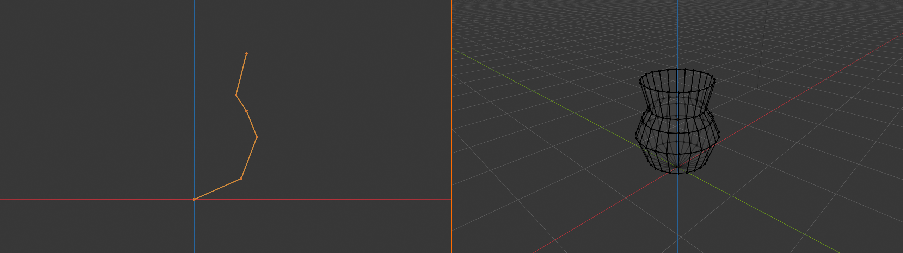
💡 Spin Pro Tips
- Profile preparation: Model only HALF the profile (one side), let Spin create the revolution
- Cursor placement: Shift+S → Cursor to World Origin for centered spins
- Partial spins: Use angle less than 360° for arches, partial bowls, C-shapes
- More steps = smoother: 32 steps for smooth vases, 8 steps for gears
Spin Workflow: Creating a Vase
🏺 Vase Creation Workflow
- Start simple: Delete default cube, add a single vertex (Shift+A → Mesh → Single Vert)
- Draw profile: Extrude (E) upward several times, creating the vase outline in side view
- Position cursor: Shift+S → Cursor to World Origin (ensures centered spin)
- Select profile: Select all the vertices of your profile (A)
- Spin it: Mesh → Spin, use 360° angle, 32 steps
- Clean up: Merge by Distance (M → By Distance) to fuse the seam
- Add caps: Select top/bottom edge loops, press F to fill
Industry Secret: Professional modelers use Spin constantly for symmetric objects. Goblets, bowls, columns, wheels, bottles, lamp shades – anything circular in cross-section. Model the profile once, spin it, done. This is exponentially faster than trying to model these shapes by hand!
Screw Modifier: Threaded and Spiral Forms
The Screw Modifier is like Spin but with a twist (literally!) – it creates spiral or threaded geometry by rotating AND moving along an axis simultaneously. Perfect for screws, springs, spiral staircases, DNA helixes, or any helical shape.
🔩 Screw Modifier Setup
- Create a profile in Edit Mode (like a circle for screw threads)
- Exit to Object Mode
- Add Screw Modifier (Modifiers panel → Add Modifier → Screw)
- Adjust Axis (which way to spiral)
- Adjust Screw value (how much vertical movement per rotation)
- Adjust Iterations (how many full rotations)
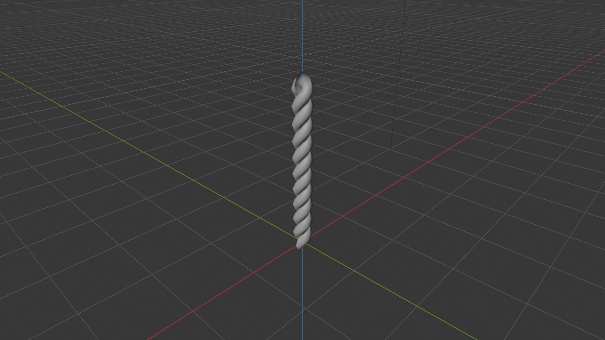
| Screw Setting | Effect | Example |
|---|---|---|
| Axis | Direction of spiral (X, Y, or Z) | Z for vertical springs |
| Screw | Distance traveled per rotation | 2.0 = 2 units up per full turn |
| Iterations | Number of complete rotations | 10 = ten full spirals |
| Steps Render | Smoothness (segments per rotation) | 16 for smooth, 4 for angular |
| Merge | Fuse start and end vertices | Enable for seamless loops |
✨ Cool Screw Modifier Uses
- 螺丝 (Screws): Triangle profile + screw modifier = perfect threads
- Springs: Circle profile, high iteration count
- Spiral staircases: Step profile, moderate screw value
- Drill bits: Sharp triangle profile, tight spiral
- Seashells: Irregular profile, increasing screw value
- DNA helix: Two profiles, opposite screw directions
Spin vs. Screw: When to Use Which
Rotational Modeling Practice
🍷 Create a Wine Glass
Practice Spin by modeling a wine glass from a profile:
- Setup: Delete cube, ensure 3D cursor at origin (Shift+S → Cursor to World Origin)
- Start profile: Add single vert (Shift+A → Mesh → Single Vert → Vertex)
- Draw glass profile (side view recommended):
- Extrude right (E, X) for base center
- Extrude up (E, Z) for stem
- Extrude right and up for bowl bottom
- Extrude up and slightly in for bowl sides
- Extrude straight up for bowl top rim
- Select all profile verts (A)
- Spin: Mesh → Spin, 360° angle, 32 steps, Z-axis
- Clean up: M → By Distance to merge the seam
- Recalculate normals: Shift+N
- Shade smooth: Right-click → Shade Smooth
Result: A beautiful wine glass created from a simple 2D profile!
🔪 Knife Tool: Precision Cutting
The Knife Tool is exactly what it sounds like – a virtual knife that lets you cut new edges into your mesh wherever you need them. Think of it like taking a blade and slicing through your geometry to add new topology exactly where you want it. This is incredibly powerful for adding detail, creating new edge loops, or preparing geometry for further modifications.
💡 Why Use the Knife Tool?
- Precision topology: Add edges exactly where you need them, not on a grid
- Custom edge paths: Create diagonal or curved edge flows
- Detail work: Cut in windows, panels, decorative elements
- Fixing topology: Add support edges to problem areas
- Non-destructive: Doesn't change existing geometry until you cut
Basic Knife Tool Usage
🔪 How to Use Knife Tool
- Enter Edit Mode (Tab)
- Press K to activate Knife Tool
- Click to place cut points on your mesh
- Move mouse and click again to continue the cut
- Press Enter or Space to confirm cut
- Press Esc to cancel
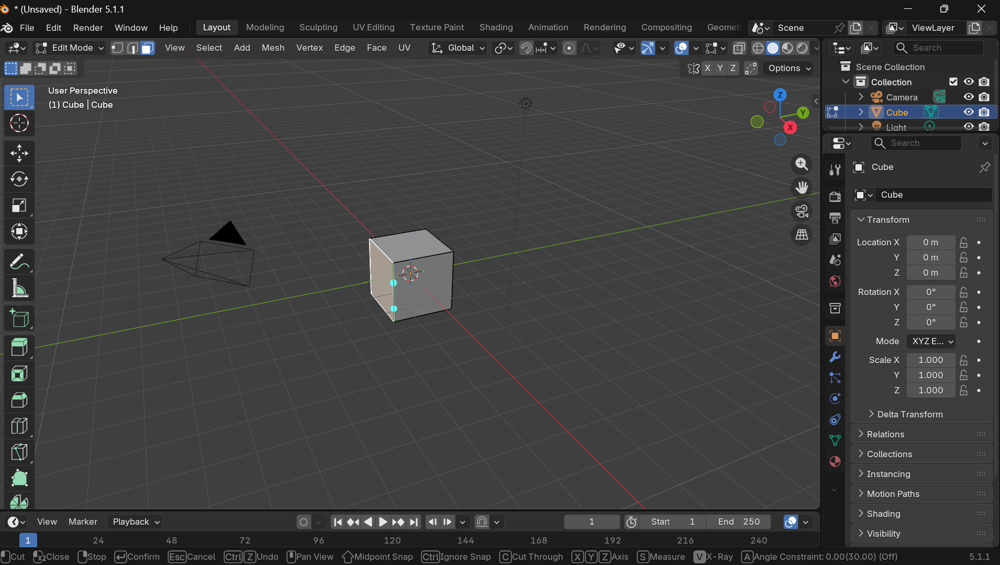
Knife Tool Modes and Options
| Key During Knife | Effect | Use Case |
|---|---|---|
| C | Constrain to angle (45° increments) | Straight horizontal/vertical/diagonal cuts |
| Z | Cut through (all visible faces) | Slice through multiple layers at once |
| E | Create new cut starting from edge | Extend from existing edges precisely |
| Middle Mouse | Snap to midpoint | Find exact centers of edges automatically |
| Ctrl | Snap to perpendicular | Create perfect 90° cuts |
| Shift | Ignore snapping | Freehand cutting without constraints |
![Three-panel horizontal composite of the Knife Tool in three different modal states on the same default cube. Left panel: a freehand zigzag cut crosses the front face with four non-collinear cut points marking a curved path. Middle panel: an angle-constrained straight horizontal cut runs across the face. Right panel: a cut-through cut crosses the cube with X-ray shading on, so the dashed back-face portion of the cut is visible through the mesh. 2 px Blender-orange vertical dividers separate the panels.](images/lesson_06_34_knife_tool_constraints.png)
💡 Knife Tool Pro Tips
- Double-click to automatically close a cut loop
- Right-click cancels the current cut line (but stays in knife mode)
- Enter twice confirms and exits knife tool in one go
- Start on edge: Press E while hovering over edge for precise start point
- Midpoint snap: Hold Middle Mouse to automatically find edge centers
Knife Project: Advanced Cutting
Knife Project is a special mode that uses one object to cut into another, like using a cookie cutter. The shape of one mesh becomes the cutting pattern for another.
🍪 Knife Project Workflow
- Create a "cutter" object (the shape you want to cut)
- Position it over your target mesh (in Object Mode)
- Select the target mesh, then Shift-select the cutter
- Enter Edit Mode (Tab)
- Mesh menu → Knife Project
- The cutter's shape is now cut into the target mesh!
Perfect for: Windows, logos, decorative patterns, text cutouts, panel details
![Three-panel horizontal composite of the Knife Project workflow. Left panel: a subdivided plane sitting on the floor with a small circle floating one meter above it, selected as the cutter. Middle panel: the Mesh menu open in the top viewport header with the Knife Project option highlighted by hover. Right panel: the same plane after Knife Project ran, now carrying a clean circular edge cut projected straight down from the circle into the plane's surface topology. 2 px Blender-orange vertical dividers separate the panels.](images/lesson_06_35_knife_project_operation.png)
Real-World Example: Imagine modeling a spaceship hull and you need to add circular windows. Create a circle object, position it on the hull, use Knife Project to cut the circle shape into the hull geometry, then delete or inset the cut faces. Perfect circular windows every time, no manual cutting required!
Bisect Tool: Precise Plane Cuts
The Bisect tool cuts your mesh along a perfectly straight plane. Think of it like slicing through your mesh with an infinite cutting board.
✂️ Bisect Tool Usage
- Select geometry to bisect (or select all)
- Mesh menu → Bisect
- Click and drag to define the cutting plane
- Adjust plane angle in operator panel if needed
Options:
- Clear Inner/Outer: Delete geometry on one side of cut
- Fill: Add face to close the cut
✅ When to Use Each Cutting Tool
| Tool | Best For |
|---|---|
| Knife (K) | Freeform cutting, custom edge paths, detail work |
| Knife Project | Using one shape to cut another, logos, patterns |
| Bisect | Perfectly straight plane cuts, creating symmetry, slicing models in half |
Knife Tool Practice
🏠 Cut Windows in a Wall
Practice the Knife Tool by adding windows to a simple wall:
- Create a wall: Add cube, scale it flat (S, Z, 0.1)
- Enter Edit Mode (Tab)
- Activate Knife (K)
- Cut first window: Click four corners to create a rectangle
- Close the cut: Click back on first point (or double-click last point)
- Confirm: Press Enter
- Repeat for more windows (press K again)
- Add detail: Select window faces, Inset (I), Extrude inward (E)
Bonus: Use C while cutting to constrain to 45° angles for perfect rectangles!
➗ Subdivide: Adding Geometry
Subdivide is one of the most fundamental operations in polygon modeling. It takes your selected geometry and splits it into smaller pieces, adding new vertices, edges, and faces. Think of it like taking a big square and dividing it into four smaller squares. Simple concept, but incredibly powerful for adding detail and topology control.
➗ How to Subdivide
- Select geometry (vertices, edges, or faces)
- Right-click → Subdivide
- Or: Edge menu → Subdivide
- Check bottom-left operator panel for options
Subdivide Options
| Option | What It Does | When to Use |
|---|---|---|
| Number of Cuts | How many times to subdivide (1-10) | 1-2 for subtle, 3-4 for detail, 5+ for very dense geometry |
| Smoothness | 0 = flat, 1 = rounded interpolation | 0 for hard-surface, 0.5-1.0 for organic rounding |
| Fractal | Adds random variation to vertices | Creating rough terrain, rocky surfaces |
| Along Normals | Pushes new vertices along face normals | Maintaining surface curvature |
| Quad Corner Type | How corners of quads are handled | Advanced topology control |
⚠️ Subdivide Warning: Geometry Explosion
Subdivide multiplies your geometry count exponentially:
- 1 subdivision: 1 face → 4 faces
- 2 subdivisions: 1 face → 16 faces
- 3 subdivisions: 1 face → 64 faces
- 4 subdivisions: 1 face → 256 faces
- 5 subdivisions: 1 face → 1,024 faces!
Be cautious: Too many subdivisions can make your mesh unmanageable and slow down Blender!
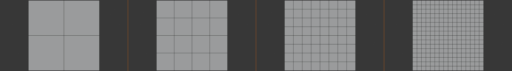
Subdivide vs. Subdivision Surface
This confuses many beginners, so let's clarify:
| Operation | What It Is | When to Use |
|---|---|---|
| Subdivide (Right-click) | Direct operation that actually adds geometry permanently | When you need more vertices/edges to work with, adding detail |
| Subdivision Surface Modifier | Non-destructive modifier that smooths and subdivides for rendering only | Final smoothing for organic models, can adjust level anytime |
Pro Workflow: Professional modelers typically keep geometry as simple as possible during modeling (low subdivision), then add a Subdivision Surface Modifier at the end for smooth rendering. This keeps the model fast and easy to edit while still looking smooth in the final render!
Subdivide Smooth: Automatic Rounding
The Smoothness parameter in Subdivide is incredibly useful. At 0, it creates flat subdivisions. At 1.0, it creates curved, rounded subdivisions by moving the new vertices toward a smooth interpolation.
🎚️ Smoothness Settings
- 0.0: Flat subdivision, maintains sharp edges (default)
- 0.5: Moderate smoothing, gentle curves
- 1.0: Maximum smoothing, very round
Access: After subdividing, check the Adjust Last Operation panel (bottom-left) and adjust the Smoothness slider
![Two-panel side-angle composite of a V-shaped polyline mesh subdivided with the Smoothness slider set to two different values. Left panel: Smoothness 0.0, the subdivided V keeps its angular geometry, the new midpoint vertex landing exactly on the original line between the V's two endpoints, so the V remains a sharp angle. Right panel: Smoothness 1.0, the same V with Smoothness pushed to maximum, the new midpoint vertex bulging outward from the original line into a rounded arc that softens the V into a curve. A 2 px Blender-orange vertical divider separates the panels.](images/lesson_06_37_subdivide_smoothness.png)
💡 Strategic Subdivision
Don't just subdivide everything! Strategic subdivision is key:
- High-detail areas: Faces, hands, intricate parts – subdivide more
- Low-detail areas: Flat surfaces, hidden parts – keep simple
- Edge loops for deformation: Add edge loops where object bends
- Support edges: Subdivide near important edges to maintain sharpness
Unsubdivide: Reducing Geometry
Made a mistake and subdivided too much? Un-Subdivide can help reduce geometry count, though it's not perfect – it attempts to remove every other edge loop.
🔄 Un-Subdivide
- Select over-subdivided geometry
- Mesh menu → Clean Up → Un-Subdivide
- Reduces geometry by trying to reverse subdivision
Note: Not always perfect – works best on evenly subdivided geometry
Subdivide Practice
🏔️ Create Terrain with Subdivide
Use subdivide to create rough terrain:
- Start with a plane (Shift+A → Mesh → Plane)
- Enter Edit Mode (Tab)
- Select all (A)
- Subdivide 5 times: Right-click → Subdivide, set Number of Cuts to 5 in operator panel
- Add randomness: In same operator panel, set Fractal to 5.0
- Enable Proportional Editing (O)
- Create hills: Select random vertices, G, Z, move up, adjust influence with mouse wheel
- Result: Rough, natural-looking terrain!
![Two-panel side-angle perspective composite of a 5-cut subdivided plane shown flat and then with the Fractal setting applied. Left panel: the plane sits flat on the world grid, the 5-cut subdivision visible as a regular grid of small faces but with zero vertical displacement. Right panel: the same 5-cut subdivision with Fractal set to 5.0 and Along Normal at 1.0, the previously-flat vertices now displaced upward and downward by procedural noise into a rough rocky terrain. WIREFRAME OVERLAY is on so the subdivision topology reads against the face fill in both panels. A 2 px Blender-orange vertical divider separates the panels.](images/lesson_06_38_subdivide_fractal_terrain.png)
Bonus: Add Subdivision Surface Modifier for smoother terrain!
✨ Bevel: Realistic Edge Treatment
In the real world, nothing has perfectly sharp edges. Even the sharpest knife blade, when magnified, shows a tiny rounded edge. Bevel mimics this reality by replacing sharp edges with smooth, angled, or rounded faces. This is one of the most important operations for making your models look realistic and professional, especially for hard-surface modeling.
💡 Why Bevel Is Essential
- Realism: Sharp 90° edges don't exist in real life – bevel adds believability
- Catches light beautifully: Beveled edges reflect light properly
- Professional look: Instantly makes models look more polished
- Better shading: Eliminates harsh lighting artifacts on edges
- Structural believability: Objects look like they could actually exist
Basic Bevel Operation
✨ How to Bevel
- Select edges (or vertices/faces)
- Press Ctrl+B (for edges) or Ctrl+Shift+B (for vertices)
- Move mouse to adjust bevel width
- Scroll mouse wheel to add more segments (smoothness)
- Click or press Enter to confirm
![Full Blender window in Edit Mode on the bevel test cube with the Bevel modal operator active. A single front-top edge is selected and the bevel preview spreads across three segment bands highlighted in Blender-orange. Top-center floating text reads `Offset: 0.1735 m, Segments: 3, Profile Shape: 0.5` and the bottom modal hints bar lists the available adjustments (`Confirm` · `Esc Cancel` · `Ctrl Snap` · `M Width` · `A Width` · `S Segments` · `P Profile Shape`). The Bevel Modifier panel from the next figure remains visible in the Properties editor as bonus context.](images/lesson_06_39_bevel_operation_interface.png)
Bevel Controls While Operating
| Key During Bevel | Effect | Use Case |
|---|---|---|
| Mouse Wheel | Add/remove segments (1-30+) | More segments = smoother bevel |
| P | Toggle profile shape | Switch between different bevel curves |
| M | Toggle miter type | Changes how corners are handled |
| A | Toggle affect (vertices/edges) | Control what gets beveled |
| C | Toggle clamp overlap | Prevent bevels from intersecting |
| Type number | Exact bevel width | Precise measurements (e.g., type "0.1") |
💡 Bevel Segments Explained
Segments control smoothness:
- 1 segment: Single chamfer (45° angle) – hard-surface look
- 2-3 segments: Gentle curve – good for most hard surfaces
- 4-6 segments: Smooth rounded edge – realistic for metal, plastic
- 8+ segments: Very smooth, almost perfect cylinder – for hero details
Scroll mouse wheel while beveling to adjust in real-time!
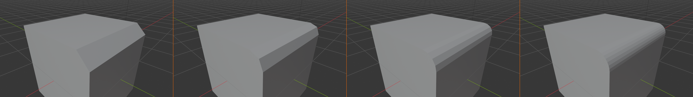
Edge Bevel vs. Vertex Bevel
| Bevel Type | Shortcut | What It Does | Best For |
|---|---|---|---|
| Edge Bevel | Ctrl+B | Bevels selected edges, creating angled or rounded surfaces | General beveling, most common use |
| Vertex Bevel | Ctrl+Shift+B | Bevels selected vertices, cutting off corners | Rounded corners, bolt heads, soft vertices |
![Two-panel composite contrasting Edge Bevel with Vertex Bevel on the same starting cube. Left panel labeled `EDGE BEVEL`: the cube's front-top-right edge has been beveled with `affect='EDGES'` at offset 0.3 and segments 4, producing a smooth rounded chamfer that runs the full length of the selected edge. Right panel labeled `VERTEX BEVEL`: the same cube's front-top-right corner vertex has been beveled with `affect='VERTICES'` at the same offset and segments, producing a triangular faceted cut that affects only the single corner. A 2 px Blender-orange vertical divider separates the panels and positive-green pill badges at the bottom of each panel name the bevel mode.](images/lesson_06_41_edge_vs_vertex_bevel.png)
Design Principle: In industrial design and product modeling, there's a rule: "Everything has at least a 0.5mm bevel." Even tiny bevels make enormous differences in realism. Look at any manufactured object – even "sharp" edges have microscopic bevels that catch light. Model accordingly!
![Two-panel MATCAP-shaded composite contrasting a sharp cube with a fully beveled cube. Left panel: the source cube with Shade Flat and zero bevel, rendered under the `basic_grey.exr` matcap, with hard edges that read as obvious CG geometry. Right panel: the same cube with all edges beveled at offset 0.05 and segments 3 and Shade Smooth applied, the bevels picking up specular highlights from the matcap and making the cube read as a physically plausible manufactured object. A 2 px Blender-orange vertical divider separates the panels.](images/lesson_06_42_bevel_before_after_cube.png)
Bevel Profiles: Custom Shapes
Bevel doesn't have to be a simple curve! You can customize the profile (the shape of the bevel cross-section) for different effects.
📐 Profile Types
- Superellipse (default): Nice smooth curve, most common
- Custom: Draw your own curve in the profile widget
- Steps: Create stepped/terraced bevels
Access: After beveling, press P to cycle through profiles, or adjust in operator panel
Bevel Modifier: Non-Destructive Beveling
For even more flexibility, use the Bevel Modifier instead of manual beveling. This lets you adjust bevel settings anytime without committing to changes.
🎚️ Bevel Modifier Advantages
- Non-destructive: Change width and segments anytime
- Angle control: Only bevel edges above certain angle (smart beveling!)
- Weighted edges: Control individual edge bevel amounts
- Consistent results: Uniform bevels across entire model
Setup: Add Modifier → Bevel, adjust Amount and Segments
![Full Blender window in Object Mode with the Properties editor open to the Modifiers tab on the bevel modifier test cube. The right panel shows the Bevel Modifier added to `L06_BevelModCube` with Amount set to 0.1 m, Segments set to 3, Limit Method set to Angle with the Angle threshold at 30 degrees, and Shade Smooth applied to the cube; the 3D viewport on the left shows the resulting all-edge bevel on the cube under user-perspective view. Four positive-green pill badges mark the Amount field, the Segments field, the Limit Method dropdown, and the Angle threshold value.](images/lesson_06_43_bevel_modifier_settings.png)
✅ Bevel Best Practices
- Start subtle: Small bevels (0.01-0.05) often look more realistic than large ones
- Vary bevel sizes: Not everything needs the same bevel – vary for interest
- Consider scale: Larger objects can have larger bevels
- 2-3 segments usually enough: Don't over-segment unless it's a hero detail
- Bevel after modeling: Add bevels toward the end, not during rough modeling
- Use Bevel Modifier for flexibility: Especially during iterative design
Common Bevel Problems and Solutions
⚠️ Bevel Troubleshooting
| Problem | Cause | Solution |
|---|---|---|
| Weird triangles/artifacts | Complex topology, tight spaces | Enable Clamp Overlap (C while beveling) |
| Bevel too wide/overlapping | Bevel width too large for geometry | Reduce width, or enable Clamp Overlap |
| Inconsistent results | Non-manifold geometry, bad topology | Clean mesh first (Merge by Distance, recalculate normals) |
| Corners look wrong | Miter type doesn't fit geometry | Press M to cycle through miter types |
Bevel Practice Project
📦 Create a Realistic Box
Practice beveling to make a believable hard-surface object:
- Start with a cube (Shift+A → Mesh → Cube)
- Enter Edit Mode (Tab)
- Select all edges (Alt+A to deselect all, then Alt+Click on edges, or just press A)
- Bevel: Ctrl+B
- Set width: Move mouse slightly (or type 0.05)
- Add segments: Scroll mouse wheel to 3 segments
- Confirm: Click or press Enter
- Shade smooth: Exit Edit Mode, right-click → Shade Smooth
- Compare: Look at the difference! The beveled cube looks real, the unbeveled looks CG
Observation: Notice how the bevels catch light naturally and make the object look physically plausible!
Advanced Bevel: Weighted Edges
🎚️ Bevel Weight (Advanced)
Control individual edge bevel amounts using Bevel Weight:
- Select specific edges you want to bevel more/less
- In Edge menu → Edge Data → Mean Bevel Weight
- Set weight (0 = no bevel, 1 = full bevel)
- Add Bevel Modifier, enable Limit Method: Weight
- Only weighted edges will bevel!
Use case: Precise control over which edges get beveled in complex models
🎯 Edit Mode Essentials: Mastery Achieved
Congratulations! You've now covered the essential Edit Mode operations that form the foundation of all polygon modeling in Blender. These tools – from selection and transformation to extrusion and beveling – are the building blocks you'll use in every single model you create.
🎓 What You've Mastered
- Selection mastery: Box, Circle, Lasso, Select Similar, Checker Deselect
- Proportional Editing: Organic deformations with multiple falloff types
- Loop Tools: Circle, Curve, Flatten, Bridge, Space, Relax
- Inset/Outset: Creating panel details and borders
- Mesh Cleanup: Merge by Distance, Dissolve, Limited Dissolve, Fill, Recalculate Normals
- Extrude: The fundamental building operation, individual vs. group
- Duplicate & Array: Multiplying geometry efficiently
- Spin & Screw: Rotational modeling for symmetric and helical forms
- Knife Tool: Precision cutting and custom topology
- Subdivide: Adding geometry strategically
- Bevel: Professional edge treatment for realistic models
✅ Key Takeaways
- Master the fundamentals: These tools work together – extrude, then bevel; subdivide, then knife cut
- Clean topology matters: Use cleanup tools regularly for professional results
- Work smart, not hard: Use Array and Duplicate for repeated elements
- Proportional Editing is powerful: Essential for organic modeling
- Bevels add realism: Even tiny bevels make huge visual differences
- Practice, practice, practice: Speed comes with repetition
🚀 What's Next
With Edit Mode essentials under your belt, you're ready to:
- Create complex models: Combine these tools to build anything
- Learn modifiers: Non-destructive modeling with Subdivision Surface, Mirror, Array, and more
- Study topology: Understanding edge flow for animation and subdivision
- Practice modeling projects: Build real-world objects to solidify skills
- Explore specialized techniques: Hard-surface modeling, organic sculpting, architectural modeling
Final Wisdom: Every professional 3D artist uses these exact same tools you've just learned. The difference between beginners and pros isn't access to secret tools – it's speed, efficiency, and knowing which tool to use when. Keep practicing, and you'll develop the intuition that makes modeling feel effortless!
🎉 Congratulations!
You've completed Edit Mode Essentials – one of the most important foundations in your Blender journey. You now have the skills to create, modify, and refine 3D geometry like a pro. Keep these tools sharp through practice, and watch your modeling abilities soar!